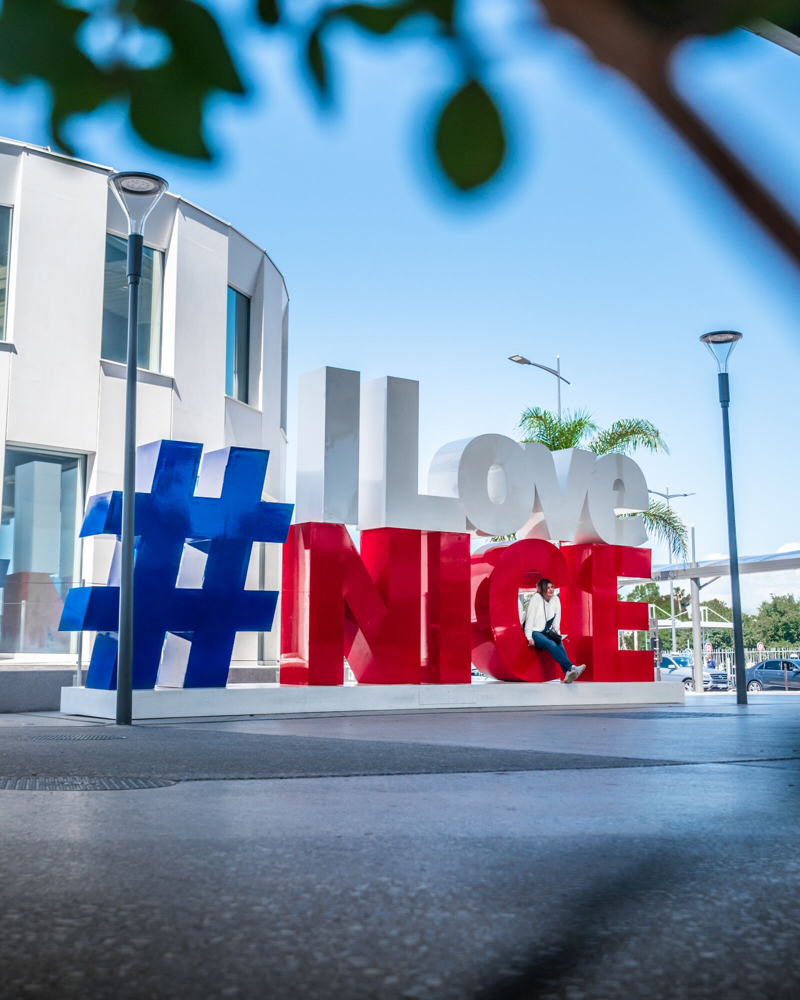

Explorez les environs
10 oct. 2021
La Métropole Nice Côte d’Azur

49 communes entre mer et montagne
Le territoire de la Métropole Nice Côte d’Azur puise dans sa géographie et son histoire une identité particulière et partagée, entre le littoral, les collines, les vallées et les montagnes.
Le Littoral
Les splendeurs naturelles du littoral se conjuguent avec les richesses de son patrimoine…
Le rivage préservé est tourné vers la Méditerranée et ses plaisirs : criques, plages et fonds marins riment avec voile, ski nautique ou plongée sous-marine.
Les villes qui le jalonnent sont en effervescence de jour comme de nuit : gastronomie, shopping, culture, événements, tout y est !
Nice appelée Nissa la Bella et ses villes environnantes :
A l’est : Saint-André-de-La-Roche, La Trinité, Villefranche-sur-Mer, Saint-Jean-Cap-Ferrat, Beaulieu-sur-Mer, Eze, Cap d’Ail.
A l’ouest : Saint-Laurent-du-Var, Cagnes-sur-Mer.
Le Moyen Pays
Non loin des rivages de la Méditerranée, ce territoire offre un havre de calme, fraîcheur et sérénité.
Les villages, blottis dans les écrins de verdure ou accrochés à la falaise tels des nids d'aigle, vous proposent de flâner dans leurs charmantes ruelles. Vous y découvrirez un patrimoine préservé : anciens moulins à l'huile, façades décorées, fontaines, lavoirs, et, au détour d'une chapelle... une vue panoramique sur les vallées, la mer ou les montagnes.
Aspremont - Bonson - Carros - Castagniers - Colomars - Duranus - Falicon - Gattières - Gilette - La Gaude - La Roquette-sur-Var - Le Broc - Levens - Saint Blaise - Saint-Martin-du-Var - Saint-Jeannet - Tourette-Levens - Utelle - Vence.
Le Haut Pays
Citadelle de la Métropole avec son massif montagneux culminant à 3.143 mètres, la nature y a sculpté, au fil des siècles, des paysages grandioses.
L'été, c'est un site privilégié pour des vacances actives au grand air, réputé pour la beauté de ses lacs, forêts, sommets, clues... L'hiver, c'est le paradis des sports de glisse avec ses domaines skiables où riment enneigement et ensoleillement…
Bairols - Belvédère - Clans - Ilonse - Isola-Isola 2000 - La Bollène-Vésubie - La-Tour-sur-Tinée - Lantosque - Marie - Rimplas - Roquebillière - Roubion - Roure - Saint-Delmas-le-Selvage - Saint-Etienne-de-Tinée-Auron - Saint-Sauveur-sur-Tinée - Saint-Martin-Vésubie - Tournefort - Valdeblore-La Colmiane - Venanson.
Proverbe niçois :
www.nicecotedazur.org